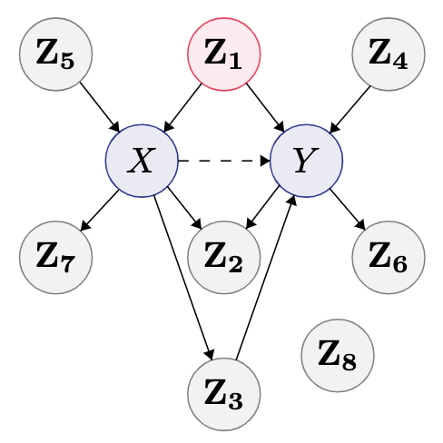

|
JACQUELINE R. M. A. MAASCH CV | Google Scholar | ResearchGate | Semantic Scholar | GitHub | LinkedIn I am a PhD student in Computer Science and NSF Graduate Research Fellow at Cornell Tech. I work at the intersection of machine learning and causal inference. I am advised by Dr. Fei Wang, Dr. Volodymyr Kuleshov, and Dr. Kyra Gan. I am affiliated with the Weill Cornell Medicine Institute of AI for Digital Health. The first year of my PhD was internally funded by the Presidential Life Science Fellowship. Formally, my concentrations are in artificial intelligence, scientific computing, and applied probability and statistics.
|


{kind=link}
CURRENT WORKMy current work mainly centers on causal structure learning and causal reasoning. My research is motivated by urgent biomedical problems, including drug discovery and bias detection in healthcare. I am currently a Research Intern in causal inference at Microsoft Research Cambridge. As a Clinical Data Science Intern at Boehringer Ingelheim, I investigated deep learning methods for survival analysis. My research interests include:
|

|
Local Causal Discovery for Structural Evidence of Direct Discrimination. Under review. 2024. J Maasch, K Gan, V Chen, A Orfanoudaki, N Akpinar, F Wang. A preliminary version of this work was accepted as an invited talk at INFORMS 2024. Local structure learning facilitates efficient causal fairness analysis in complex decision systems, as illustrated by a real-world case study on organ transplant allocation. |
|  |
Local Discovery by Partitioning: Polynomial-Time Causal Discovery Around Exposure-Outcome Pairs. Uncertainty in Artificial Intelligence. 2024. J Maasch, W Pan, S Gupta, V Kuleshov, K Gan, F Wang. Preliminary versions presented as a poster at the NeurIPS 2023 Causal Representation Learning Workshop and as an invited talk at POMS 2024. [ arXiv ] [ code ] [ poster ] [ slides ] Local causal discovery enables efficient automated covariate selection under limited prior knowledge with guarantees on correctness. |

|
Molecular de-extinction of ancient antimicrobial peptides enabled by machine learning. Cell Host & Microbe 31. 2023. J Maasch*, M Torres*, M Melo, C de la Fuente. *Equal contribution. [ paper ] [ code ] [ nature news ] [ cnn ] [ vox ] Machine learning guides bioinspired prospection for encrypted antimicrobial peptides that display in vitro and in vivo activity with low host toxicity. |
PROFESSIONAL ACTIVITIESINVITED TALKS
ACTIVITIES In 2023, I co-organized Cornell's interdepartmental Causal Reading Group, a student-led discussion group on causality and causal inference. I co-developed CS 6006: Succeeding in the Graduate Environment, the first-year PhD seminar at Cornell Computer Science. With students at Cornell, MIT, and NJIT, I co-organized the 2024 NYC meetup for the Learning on Graphs Conference, Learning Meets Geometry, Graphs, and Networks. I am a student leader for the PhD admissions and recruitment process at Cornell Tech.
PRIOR WORKAs a master's student researcher at Penn Engineering, I used machine learning to investigate the physicochemical properties and therapeutic potential of antimicrobial peptides. My master's research was supported by the University of Pennsylvania's GAPSA-Provost Fellowship for Interdisciplinary Innovation and the Reproducible Research Fellowship, funded by the Open Knowledge Foundation and Alfred P. Sloan Foundation. Prior to this, I was a research assistant in various clinical and experimental biology labs. As an experimentalist, I helped develop molecular diagnostics for neglected tropical diseases in academia and for viral pathogens in industry. CONTACT
Preferred contact: In general, I can be reached through LinkedIn.
|
|
Updated July 2024. This website was adapted by J. Maasch from this source code. |